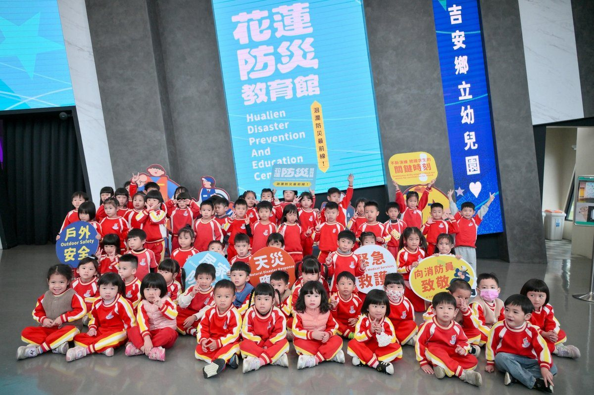

吉安鄉幼走進防災教育館 游淑貞：防災教育從小扎根

可樂電子報小編/編輯
吉安鄉立幼兒園落實安全教育，日前完成校園消防演練後，今（25）日上午接續辦理115學年度第一學期戶外教學，全園師生87人前往花蓮防災教育館，展開一趟寓教於樂的防災探索之旅。園方希望把防災觀念從教室帶進真實場域，再從場域帶回家庭，讓安全教育成為孩子日常生活的一部分。

在館內導覽員帶領下，小朋友分組參與「緊急救護」、「居家防災」與「天然災害」等主題探索，透過互動關卡與科技模擬情境，認識生活中可能遇上的災害風險。孩子們也從操作中學習地震、火災及颱風來襲時的自救與避難技巧，原本抽象的防災常識，經由親手實作轉化為容易理解的生活經驗，現場驚呼與笑聲此起彼落。

花蓮防災教育館長李漢龍歡迎這群小小訪客。他表示，幼兒防災教育最重要的是讓孩子「不害怕，也知道遇到狀況時該怎麼做」。災害無法預知，卻能靠平時教育累積應變能力；防災不是讓孩子對災害心生恐懼，也不是背誦口訣，而是從小學會保護自己。他提醒，關鍵不在記住多少知識，而是災害發生當下能否想起平時所學、做出正確反應，也籲請家長陪孩子練習「趴下、掩護、穩住」，並共同準備緊急避難包。

吉安鄉立幼兒園表示，參訪是校內課程的延伸，期盼孩子把演練所學內化為生活中的應變能力。面對居家火災等緊急情境，除了懂得保護自己，也能提醒家人採取正確行動，並牢記發生火災時撥打119求助。園方也請孩子把防災觀念帶回家，陪家人一起做好居家安全巡檢，從電器、插座到逃生路線逐一確認，降低意外發生的風險。

看著孩子們在愉快氣氛中探索學習，鄉長游淑貞表示，防災教育必須從小扎根。園內平時持續安排防震宣導、地震及消防演練，這次更讓孩子走出教室、走進防災教育館，用眼睛看、親手操作，把印象刻得更深。她期盼每位幼兒都能建立敏銳的安全意識與基礎自救能力，面對突發狀況時沉著應對、保護自己，也把正確的防災知識分享給家人，讓安全網從校園延伸到每一個家庭。
📸 更多現場紀實影像


🌟 掌握花蓮在地第一手資訊・歡迎訂閱追蹤
深度紀實報導、在地精采影音專題，第一時間接收最新消息！